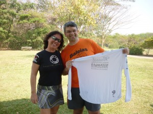
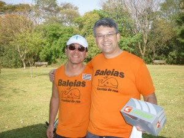
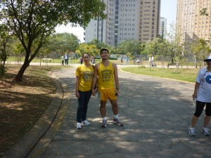
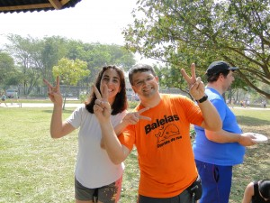

vamo, vamo, vamo…
Encontro no Parque. Festa de amigos. Meu aniversário
Nunca demorei tanto para postar no blog qualquer acontecimento de corrida. Mas desta vez eu travei. Emoção demais também nos trava. Os últimos dias se passaram de forma totalmente diferente. Fiquei meio aéreo, literalmente abobalhado. Por vezes, peguei-me pensando se tudo não passou de um lindo sonho.
Sobre o encontro/festa do último domingo eu escreveria um livro. Então, o que pinçar? A solução eu encontrei no Blog da Dona D. Hoje grande amiga e Baleias, Equipe da qual sou parceiro de coração, coração este que tem lugar de sobra para ser Chefe de Torcida desta maravilhosa equipe Ex-sedentário e mais uns treinos legitimamente 100 Juízo.
Tudo começou com o necessário agendamento de data para encontro dos membros da Equipe Ex-sendentário que participará, com oito integrantes, da Maratona de Revezamento Pâo de Açucar, no próximo dia 19.
Eu já estava muito feliz de juntar tantos amigos especiais para a prova de revezamento, mas ainda não estava suficientemente bom. Consultando as bases (amada esposa) e contando com o apoio da minha mãe, que antecipou a viagem dela em 10 dias, especialmente para o evento, resolvemos então que seria também uma comemoração do meu aniversário, com direito a bolo integral de milho da Tia Toninha (minha mãe) que tanto amo.
Tudo aconteceu de forma ainda mais perfeita do que havia imaginado. E olha que o Claudião viaja quando se empolga.
No encontro só tinha amigos. E fica aqui o meu agradecimento a Dona D. que nunca tinha me visto mais gordo e, na maior confiança, foi de espírito e coração abertos, levando com ela sua linda família. Dona D (que não é Dundes), você já mora aqui no meu coração.
Como estou falando do meu dia, todos vibraram comigo uma alegria de pai. Aliás, nossa alegria de pais, não é mesmo Alecão, porque neste dia Henrique e Mauricio andaram de bicicleta sem as rodinhas.
Chegamos (Mari, Henrique e Dona Lola) no Parque as 09:00 horas, no mesmo horário também chegaram Alecão (e família), Samuca e Thiago, com a Paula. Todos eles se dirigiram para o quiosque e eu fiquei na expectativa da chegada dos demais. Não demorou chegou a Monica Otero, minha mãe, irmã e sobrinha. Em seguida o Baleias e Enio Yuhara, a Familia inteira da Ana Shibata e nosso mais novo membro da equipe Ex-sedentário, Seu Pedro Rios com sua esposa Sueli.
E nada da Dona D. Pensei que ela não fosse. Pensei até que ela não viesse mais. Começou então a sessão de fotos.

Obrigado Monica, você é um anjo. Um dia ainda farei parte de sua equipe de apoio na Badwater.

O Enio eu posso considerar um presente do Miguel Delgado, porque é amigo, é parceiro, é sensacional.

Aqui estou entre o meu mentor, incansável incentivador que nunca desiste de mim: Thiago Zamithi e o Alecão, que dispensa comentário: é parte de mim, a parte quieta e reservada, mas é.

Estou entre Seu Pedro, nosso mais novo membro da Equipe Ex-sedentario que correrá também a Maratona de Revezamento (com sua esposa) e minha linda e atlética mãezinha. Seu Pedro é a simpatia em pessoa. E é o meu orgulho da equipe. Ver tanta gente se divertindo junto e fazendo atividade física não tem preço. Você é o nosso tesouro Seu Pedro.

Quando eu achei que não chegaria mais ninguém, eis que me chega o Grande Fábio Namiuti com a Janete. Grande parceiro e Amigo Fábio Namiuti, o laço que já era forte, estreito fica ainda melhor. Valeu amigão.
As fotografias não tiveram um sequencia lógica, porque o Claudião emocionado fica sem qualquer resquício de logicidade em seus atos. Eu estava era surtado de felicidade. Por esse grave defeitto as fotografias da minha grande parceira Ana Shibata e sua maravilhosa família estará entremeada nas demais. Simplesmente imperdoável. Diga-se, para registrar, que a Ana Shibata foi fundamental para o sucesso do encontro. Ela que escolheu o lugar apropriado, deu dicas de melhor bebida para acompanhar os bolos etc. Prova viva de que esse foi apenas o primeiro de muitos encontros de corredores. Não é mesmo Ana?
É. A Donda D. não veio mesmo, eu pensei. Seguindo o festejo e meu estado de pleno regogizo, partimos para um bacana passeio pelo Parque Villa-Lobos. Ana Shibata e o Samuel ficaram frustrados por não ter tido corrida. Mas nas nuvens (onde eu estava me sentindo naquele momento) eu não consigo correr, então desencanei totalmente.


O casal logo ao lado da Monica é o Ygor e Ana Amélia (norinho e filha da Ana Shibata). O Ygor com seu visual todo estiloso é uma simpatia. Atencioso com todos e disposto a ajudar no que for preciso. Valeu amigo. Ana Amélia reforçou para mim a promessa de subir todo o mês a Pedra Grande, sempre reduzindo o tempo. Sejam bem-vindos à equipe Ex-sedentário. Arrazaremos na Maratona de Revezamento.
O Parque é público e estava bem cheio, mas literalmente monopolizamos uma trilha suspensa de madeira, por onde se observa a espécimes de árvores que existem lá. E pensar que até pouco tempo o Villa-Lobos era conhecido como o Parque sem árvores.


Se eu estava feliz?
Deusolivre piá!
Feliz demais da conta!
Barbaridade!
Literalmente feliz como gordo de camisa (Baleias) nova.

O Samuca é um grande amigo. Que algum tempo atrás fazia parte daquelas histórias de velho chato (porque no tempo que eu era novo e disposto eu pedalava com o Samuel lá na Estrada Velha de Santos). Taí, vida nova, resgatando bons momentos com amigos verdadeiros. Hoje o Samuel é um membro da Equipe Ex-sedentário e parceiro de muitas novas corridas. Isso é a realização de um sonho.
E o passeio prosseguia. Sempre com uma interação entre os amigos que era um regalo para os meus olhos. Ver amigos do peito se tornando amigos entre eles é algo que chega a doer no peito. É felicidade demais.

Um dia eu hei de correr ao menos na rabeira desses meus heróis: Fabio Namiuti e Thiago Zamith

Olhem só do que estou falando. Ana Shibata e Monica Otero, amigas de longa data. E dá para não se emocionar com isso?

De volta ao QG (Quiosque Gordo) onde aconteceria finalmente a comilança, eu já completamente zureta de emoção, chega uma moça e com a mão no meu ombro vai logo dizendo: – Claudio, eu sou a Dona D! Não acreditei! Sim, ela estava ali, conosco. Perdeu o passeio, mas estava ali, na minha festa de amigos. Que prazer! Que figura! Acontecia ali, naquele exato momento, o encontro Baleias de São Paulo.

A surpresa foi que a Dona D chegou chegando, tomando o lugar dela de melhor amiga dos meus amigos e do Gordo que relata este encontro. Eu endoidei de vez nessa hora.
Mas essa não foi a única supresa do dia. Deus havia me reservado ainda mais. Encontrei, por acaso, no parque o Gilberto. Meu primeiro parceiro de corridas. Em 2003, fizemos a Maratona de Revezamento Pão de Açucar em dupla. Foram os primeiros 21 km de ambos. Emoção pura. Ele apareceu no quiosque e me disse que tinha engordado. Foi quando percebi que precisaremos de três meses reclusos para colocar toda a conversa em dia. Trocamos telefone e promessas de novas corridas. Detalhe: não nos encontrávamos desde aquele feito. E uma fotografia para registrar, lógico.

Não faltava mais nada. Quer dizer, faltava sim. Eu já estava com uma fome e uma sede Baleias. E seguiu a Valsa.


Esperem! Por favor, reparem nesta fotografia acima. Olhem esse sorriso da Dona D e do marido dela. Este é o melhor presente que poderiam ter me dado nesse dia. Não tem mais jeito. Eu os amo desde sempre agora. A Dona D (acho que é Dundes sim).

Minha amada irmã Ana e minha sobrinha Laura.

Meu amor cuidando de tudo. Amo você demais Mari.

Familia Shibata. Todos corredores. Só faltou a Silvinha.

Nesta foto, estavamos transmitindo em tempo real energia positiva para a Maratona das Praias da Elis. E não foi que ela ganhou troféu. Segunda colocada na categoria. Parabéns Elis. Nova e definitiva amiga.
Foi um encontro maravilhoso, as fotografias transmitem essa alegria que foi esse encontro. O primeiro de muitos outros que estão por vir. Nos próximos haverá mais corredores, com certeza. E dá-lhe celebração da amizade.
Dois membros efetivos da equipe Ex-sedentário não puderam ir: o Fábio Japa e o Luciano. Mas são guerreios, são amigos e farão parte da grande festa que será nossa corrida no próximo dia 19.
.jpg "DSC01730 (1024x576)")
.jpg "DSC01830 (1024x576)")
.jpg "DSC01901 (1024x576)")


.jpg "IMG_7313 (1024x768)")


{kind=link}
{kind=link}
Muito boa a festa e dia 19/09 temos outra, todos juntos na maratona de revezamento \o/
Foi uma bela festa. E o melhor é que eu estava lá pra ver, ninguém me contou… (olha que legal, a frase vale tanto para a Corrida Vertical antes, quanto para o Domingo no Parque, depois!)
E como é bom testemunhar a alegria legítima que é reunir os amigos. Sinto o mesmo a cada novo treino, a cada nova corrida. E em doses cavalares. Há quem diga que cause dependência… Sigamos arriscando!
Parabéns, Claudião! E muito obrigado por compartilhar essa sua felicidade toda conosco. Ao vivo, ali, na hora… E agora novamente, nessa bela e histórica postagem.
Abração!
Fábio
Claudio!!!!!
Gostei muito de poder compartilhar um momento tão especial com vocês! Eu é que tenho de agradecer o convite.
Um super abraço, meu amigo!
Que maravilha!!! A corrida nos proporciona esses encontros. Parabéns meu amigo, e que venham muitos outros!
É Claudio esse domingo foi o grande dia, uma interaçao entre eu, minha família e seu grupo de amigos corredores do qual sou grata por estar me introduzindo na modalidade “corrida” e por compartilhar a amizade deles também.
É hiper legal vc conhecer pessoalmente aqueles com quem vc troca diálogos na net…. ah, sem contar, as trocas de experiências, ter o relato das vivências dos que já trilham a mais tempo esse caminho que eu.
No primeiro encontro acho que realmente nao daria para conciliar a apresentação de todos, com corrida/treino………. afinal o convite era mais para um dia de Festejar…….. e quem diria o Sol estava lindo!!!……. então registre-se fiquei apenas meio frustrada…………rs
Quanto as indicações foram apenas as que já havia vivenciado e que tinham dado certo……… mas vc ainda nao conhece o meu lado festeiro……. e de querer as coisas bonitas, as minúcias, a agitação para o festejo, precisando de ajuda é só gritar.
Que mais posso dizer……….. Que Domingo Legal!!!!!!!,
oi, claudio!!!
que relato emocionante!
foi um grande dia, repleto de momentos muito especiais!!!
momentos divinos!
tantos e preciosos amigos, que acompanham você em sua jornada!!!
que venham muitas comemorações assim!!!
deu vontade de estar aí, entre vocês, partilhando desse dia mágico! vale mais que maratona, com troféu e tudo;)
obrigada pela força!!! essa energia boa de vocês que me fez sentir voando lá em bertioga!!!
obrigada!!!
parabéns!!!
pelo seu aniversário!!!
pela família linda!!!
pelos amigos!!!
um grande abraço,
da amiga
elis
Claudio, meu comentário acabou virando um post para o @Taeq. Foi marcante e sensacional.
Quanto ao Maurício e o Henrique aprenderem andar sem rodinhas… Eu fui responsável… Eu levei as chaves e retirei a rodinha das bicicletas… O Maurício já saiu andando.
Quanto ao Henrique… Eu e o Samuca fizemos o nosso treino correndo atrás dele… hahahaha
Claudião, meu amigo!!!
Que relato mais emocionante. Mil perdões por não ter vindo aqui antes, estive ocupada nesses últimos dias que nem a internet estava dando tempo de acessar.
Mais uma vez quero te desejar toda a felicidade do mundo, vc merece!!! Que vc tenha muitos e muitos anos de corrida pela frente. E que Deus abençõe vc e todo a sua família. Tenho certeza que não faltará oportunidade para comemorarmos juntos o teu niver.
Bjos,
Dani e Vini
Esse bog esta cheio de sensibilidade…
Vcs são especiais.
PARABÉNS Tomate, vc é uma pessoa linda!
Caro amigo. Primeiro é preciso dizer que é uma grande honra para nós você passar o seu aniversário com o Manto Coral. Estavamos todos contigo. Não escrevi nada antes porque viajei logo no dia 02 e ficou difícil acessar a rede. Você é grande e a reunião que fez aí mostra com clareza sua força. Continue firme que ainda vai aproveitar muito esse mundo das corridas que é sensacional. Um abraço forte meu e de todos os seus amigos Baleias que estavam representados pelo Ênio (o que de melhor temos na equipe) e Dona D. que já chegou arrebentando. Miguel Delgado.
Uia! Enquanto eu me matava de treinar, vocês estavam comendo bolo?!?! Rsrsrsrs. Nossa, que festança! Na próxima, quero ir, hein? Rs. Parabéns, super-atrasado! Um abraço!
Eitaaaa…o Post é a sua cara…pura emoção!! Se desse para postar as suas lágrimas estaria tudo molhado esse post! Lembrei imediatamente você contando sobre este dia, lembra? Estávamos no ônibus, eu, vc, Dani e Vinícius, quando passamos pelo parque…muito legal! Tomara que o futuro me permita estar entre esses tantos amigos! Abraço Claúdião!!
Felipe
[…] bike. Este preparativo é porque meu primo me convidou para ir no parque Vila Lobos no domingo. Era para comemorar seu aniversário e de um jeito diferente. Ele convidou os seus incentivadores no esporte para cantar parabéns. Achei muito inusitado a […]